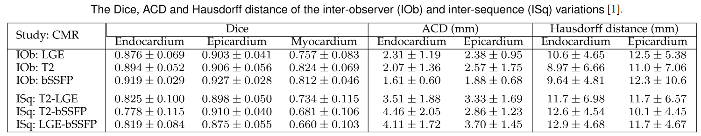
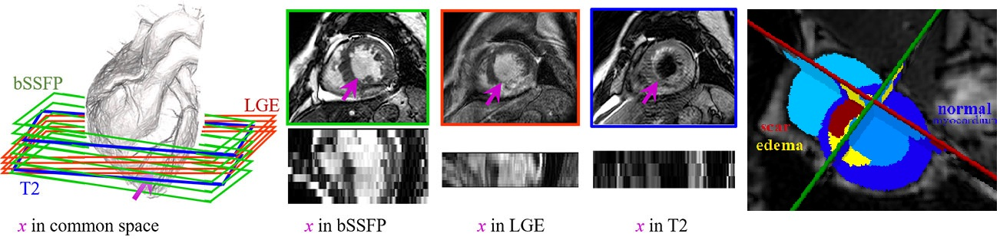

Data information
To register, please download registration form and send to the organizers.
We provide 45 cases of multi-sequence CMR. Each case refers to a patient with three sequence CMR, i.e., LGE, T2 and bSSFP CMR. All these clinical data have got institutional ethic approval and have been anonymized. The data released here have been pre-processed using the MvMM method [1], to align the three-sequence CMR into a common space and to resample them into the same spatial resolution.
The provided gold standard labels include: left ventricular (LV) blood pool (labelled 500), right ventricular blood pool (600), LV normal myocardium (200), LV myocardial edema (1220), LV myocardial scars (2221),
though the evaluation of the test data will be focused on the myocardial pathology segmentation, i.e., scars and edema.
The inter-observer variation of manual scar segmentation, in terms of Dice overlap, was 0.5243±0.1578 [1], . As for the inter-ob of LV, RV and Myo, please refer to our below table:

This table gives the inter-observer variations from the three manual delineations and the inter-sequence variations among the three sequences.
In computing the inter-sequence variations, the manual segmentation of the high-resolution images was transformed onto the image space with lower resolution, after a global affine registration to correct the global misalignment due to body motions, and the Dice scores and ACD were solely computed on the overlapped regions of the two CMR sequences [1].

The details of original CMR sequences are as follows:
The bSSFP CMR was a balanced steady-state, free precession cine sequence. Since both the LGE and T2 CMR were scanned at the end-diastolic phase, the same cardiac phase of the bSSFP cine data was selected for this study. The bSSFP images generally consist of 8 to 12 contiguous slices, covering the full ventricles from the apex to the basal plane of the mitral valve, with some cases having several slices beyond the ventricles. The typical parameters are as follows, TR/TE: 2.7/1.4 ms; slice thickness: 8-13 mm; inplane resolution: reconstructed into 1.25×1.25 mm.
The LGE CMR was a T1-weighted, inversion-recovery, gradient-echo sequence, consisting of 10 to 18 slices, covering the main body of the ventricles. The typical parameters are as follows, TR/TE: 3.6/1.8 ms; slice thickness: 5 mm; in-plane resolution: reconstructed into 0.75×0.75 mm.
The T2 CMR was a T2-weighted, black blood Spectral Presaturation Attenuated Inversion-Recovery (SPAIR) sequence, generally consisting of a small number of slices. For example, among the 35 cases, 13 have only three slices, and the others have five (13 subjects), six (8 subjects) or seven (one subject) slices. The typical parameters are as follows, TR/TE: 2000/90 ms; slice thickness: 12-20 mm; in-plane resolution: reconstructed into 1.35×1.35 mm.
[2] J Qiu, L Li, S Wang, K Zhang, Y Chen, S Yang, X Zhuang: MyoPS-Net: Myocardial Pathology Segmentation with Flexible Combination of Multi-Sequence CMR Images. Medical Image Analysis 84, 102694, 2023. link code